Pad-Micromegas trackers for the P2 experiment: from electronics
optimisation to a three-plane telescope in the P2 geometry.
15 min + 5 questions, talk 4 Sep 2026.
How to use this. This is a superset: 49 slides
plus backup, so the talk can be cut down rather than padded out. Each slide
carries a tag —
CORE the ~19 slides that
make the 15 minutes,
OPTIONAL strong if time
allows,
BACKUP hold for questions,
NEW a result that did
not exist when the roadmap was written. Every slide has a
speaker note under the rule: the one sentence that must be said.
Proposed 15-minute path (CORE only)
Title
P2: the measurement
Why tracking, and where BASKET sits
The detector: metallic wedge pad-Micromegas
Making them: the baking problem
Two readouts on purpose
Nov 2025: the SNR optimum
The Saclay cosmic bench
Bench efficiency and the pillar budget
Four detectors, one method
July 2026: the P2 telescope at H4
The absolute measurement
One muon, five chambers (3D)
96–97 %, and where the rest goes
ε(HV): the bench predicted the beam
Timing: the 20 ns goal
DREAM vs VMM3a on the same chambers
Synthesis + outlook
Time budget
Block
Slides
min
P2 physics + BASKET
2
2.0
Detector design + manufacturing
3
2.5
Act 1 — Nov 2025 electronics
1
1.0
Act 2 — cosmic bench
3
3.0
Act 3 — SPS July 2026
6
5.0
Synthesis + outlook
1
1.0
Title / spare
1
0.5
total
17
15.0
Act 3 gets a third of the talk — it is
the punchline. Act 1 is compressed to a single slide, as the task plan
recommends.
Three things to settle before this is frozen.
(1) Clearance — no refereed BASKET paper exists; the specs come from
collaboration notes. Ask now.
(2) Which efficiency number goes on the slide: initial 96–97 % or
settled ≈96/95 %. The deck quotes both with the charging figure as evidence;
pick one form of words.
(3) Two citations still marked ⚠ in the roadmap: the canonical VMM3a
reference, and anything BASKET-specific beyond the design report.
Sources. Every number here is traceable:
reports/mpgd26_sps_beam_2026-08/ (beam),
data/Cosmic_Bench/Analysis/DET*_EFFICIENCY.md +
CHARGING_UP.md (bench, Aug-2026 reprocessing),
sps_beam_analysis/vmm_dream_matching/ (VMM),
gas_studies/ (Magboltz), FreeCAD/ (FEM),
and the EOS tree /eos/experiment/ntof/data/x17/p2_sps_july.
1CORE
Pad-Micromegas trackers for the P2 experiment
Electronics optimisation, cosmic
characterisation, and a three-plane telescope in the P2 geometry at the CERN SPS
A. Kallitsopoulou
CEA Saclay / IRFU — on behalf of the P2 BASKET group
96–97 %
absolute efficiency,
three planes, uRWELL-referenced
3.46 mm
spatial residual = 12 mm/√12,
binary pad response
15.5 ns
best-station time resolution,
against a 20 ns goal
MPGD2026 · 31 Aug – 4 Sep 2026 · talk 4 September
Say: "We are building the pad-Micromegas trackers for
the backward-angle spectrometer of the P2 experiment. I will show you the
electronics optimisation, the bench characterisation, and then a dress
rehearsal of the P2 tracker itself on a beam."
2ACT 0
Why P2 needs these detectors
The measurement, the spectrometer, and what tracking buys
CORE
P2 at MESA: the weak mixing angle to 0.14 %
Design report: D. Becker et al., Eur. Phys. J. A
54 (2018) 208 — arXiv:1802.04759
The observable
Parity-violating asymmetry in elastic e–p scattering gives the
proton's weak charge, and from it sin²θW:
APV
−39.94 ppb
target ΔAPV
0.56 ppb (1.4 %)
⟨Q²⟩
4.5 × 10⁻³ GeV²
beam
155 MeV, 150 µA polarised CW
target
60 cm LH₂
running time
10 000 h
elastic electron rate
~0.1 THz
→ sin²θW to 0.14 % relative, sensitive to BSM mass scales
of order 50 TeV.
What that demands of a detector
Rate. 0.1 THz total elastic rate is the environment. This is why the
readout question is not cosmetic.
Q² knowledge. An integrating asymmetry measurement only becomes
physics if you know Q². That is a tracking job — the forward tracker
must deliver ⟨Q²⟩ to 1 %.
Robustness. 10 000 h of running means gain stability and spark
behaviour are first-class specifications, not afterthoughts.
Two trackers, two technologies: the forward Q² tracker
is HV-MAPS; the backward spectrometer — BASKET — is Micromegas.
This talk is about BASKET.
Say: "0.14 % on sin²θW is the headline, but
the number that shapes my detector is 0.1 THz — and the fact that an
integrating measurement needs tracking to know Q² at all."
3CORE
BASKET: the backward-angle Micromegas spectrometer
Three planes, ≈20 000 channels, inside the 0.6 T solenoid —
the configuration measured in July 2026
Why go backward at all
The dominant hadronic uncertainties in extracting sin²θW are
nucleon form factors. Backward-angle running measures them directly:
quantity
uncertainty improves by
strange electric form factor GEs
× 4
strange magnetic GMs
× 12
effective axial GA
× 10
Design report Sec. 7. So BASKET is not a monitor — it removes
the leading systematic on the main result.
The apparatus
≈20 000 Micromegas channels in three detector planes at large
backward angles.
The three planes reconstruct electron tracks inside the 0.6 T
solenoid field.
Pad readout: each channel carries a full 2-D position, so there is no
strip ambiguity and no micro-TPC reconstruction.
This is the shape of the talk. Three planes, in a
row, in the P2 geometry, is exactly what we put on the H4 beam in July 2026 —
same plane spacings, same mechanics, same electronics chain.
⚠ Not yet published for BASKET: the spatial-resolution
spec, per-plane rate density, timing requirement, and the pad-vs-strip
rationale. Those come from collaboration internal notes — hence the clearance
question.
Say: "Three planes in a 0.6 T field. Remember that
number — three — because the last third of this talk is three of these
detectors in a row on a beam."
4CORE
The detector: a metallic, non-resistive bulk Micromegas with a wedge pad anode
Geometry
anode
1280 pads, fan / wedge sector
segmentation
10 FPC sectors × 128 pads
typical pad
≈ 12 × 12 mm²
amplification gap
150 µm
drift gap
3.0 mm
mesh
SS316L, 18 µm wire, 45 µm pitch
mesh supports
≈11 700 small (⌀0.8 mm) on a 4 mm grid
+ 5 large (⌀6 mm)
pillar area
3.43 % of the active area
Two consequences to keep in mind
Metallic, non-resistive mesh: no resistive-strip spark damping — so
discharge behaviour has to be characterised, not assumed.
Pads, not strips: the position resolution is set by the pad, not by
charge sharing. We will measure exactly that.
Pad centres, polar coordinates and areas are taken directly from
the production Gerber of the readout PCB — the same map feeds every analysis in
this talk.
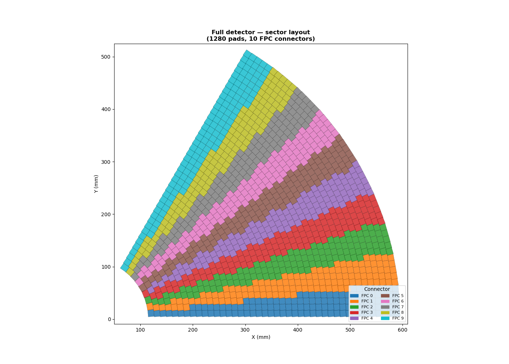
Colour = one of the 10 FPC
connectors. Each connector half (64 pads) feeds one 64-channel front-end
connector.
Say: "Wedge-shaped because it has to tile a
backward-angle cone. 1280 pads of about 12 by 12 millimetres — and that pad
size is going to come back as the spatial resolution."
5CORE
Making them was the hard part: the mesh buckles during baking
Why there were no working large detectors until this summer
The mechanism
Manufacturing requires a 146 °C bake (ΔT = 121 °C from room
temperature) to cure the adhesive. The steel mesh and the PCB do not expand
equally:
SS316L: 16 × 10⁻⁶ /°C — well known
PCB (Shengyi S1000-2M): ≈14 × 10⁻⁶ /°C — not published
The PCB holds the mesh at the pillars and the wall frame, so the mismatch
puts the mesh into compression. Pre-tension resists it:
λ = Tpre / (Kmesh · Δα · ΔT) λ > 1 → survives flat · λ < 1 → buckles at
≈ 25 °C + λ × 121 °C
What the shop floor sees
≥ 10 N/cm: no visible waves after baking
< 10 N/cm: waves appear; at 7 N/cm they are narrow
At low tension, waves start as early as 60 °C
Wave scale ≈ the 3 mm pillar pitch — they form between pillars
Where we got to
An FEM model (FreeCAD + CalculiX, ~100 k nodes) was built, but the bundled
CalculiX cannot use a thermal load as the reference load of a buckling step —
so the working prediction is the analytical λ above, calibrated on the
observation that 10 N/cm is the threshold:
Combined stiffness × CTE mismatch ≈ 8.3 N/m per °C,
i.e. ≈1000 N/m of compression at full bake — which is exactly the tension at
which waves stop appearing.
The four levers
Raise pre-tension to 12–15 N/cm (margin over threshold) —
mechanically harder to hold during gluing
Lower the bake temperature — constrained by the adhesive cure
PCB with CTE closer to 16 × 10⁻⁶ — removes the driver entirely
Tighter pillar pitch — constrained by field uniformity
Still missing, and worth asking this audience:
the in-plane CTE of S1000-2M; the effective membrane stiffness E·t of a woven
45 µm / 18 µm SS mesh (vibration method); and the Tg of cured
Dynamask.
Outcome: raising the pre-tension above threshold gave us the first
batch of flat, working large-area detectors — the four characterised next.
Say: "This is a two-millionths-per-degree CTE mismatch
that decides whether you have a detector. Higher pre-tension fixed it — and
that is why the detectors in the rest of this talk only exist from this
summer." Also a genuine ask: flag the three missing material numbers —
someone in the room may have them.
6CORE
Two front-end readouts, on purpose
DREAM to understand the detector, VMM3a to operate it
DREAM
CLAS12 MVT, NIM A 957 (2020) 163423
64 channels; CSA + shaper + 512-cell analog memory
Full waveform per hit — we record 16 samples at 60 ns
Peaking time 50–900 ns, 16 settings
Externally triggered, dead-timeless to 20 kHz
→ The understanding readout. Waveforms let you fit the
clock phase and correct time-walk, so a timing number means something. This is
what every efficiency number in this talk is measured with.
VMM3a
ATLAS NSW / RD51 — ⚠ canonical citation to confirm
64 channels; self-triggered, sparse readout
Per-hit peak ADC + TDC, no waveform
Peaking time 25 / 50 / 100 / 200 ns; gain 0.5–16 mV/fC
Per-channel discriminator with a per-chip threshold DAC
→ The operating readout. Self-triggered and sparse is
what survives 0.1 THz. But a discriminator throws away the information that
lets you diagnose the chamber — which is precisely the story of the last act.
The strategy this justifies: characterise on DREAM
where you can see everything, then qualify the VMM against that reference on
the same chambers. The July 2026 campaign did exactly this — and it is
why we can say what the VMM's limitation is instead of guessing.
Where this goes next: the SALSA MPGD readout ASIC
(arXiv:2501.10237) is the
longer-term target.
Say: "One readout tells you what the detector is doing.
The other is what you can actually afford to run at P2. We deliberately carried
both, and that decision is what makes the last slides possible."
7ACT 1
SPS, November 2025
Finding the electronics working point
CORE
Nov 2025: the VMM3a shaping optimum
Two pad geometries in the same beam, full gain × peaking-time scan
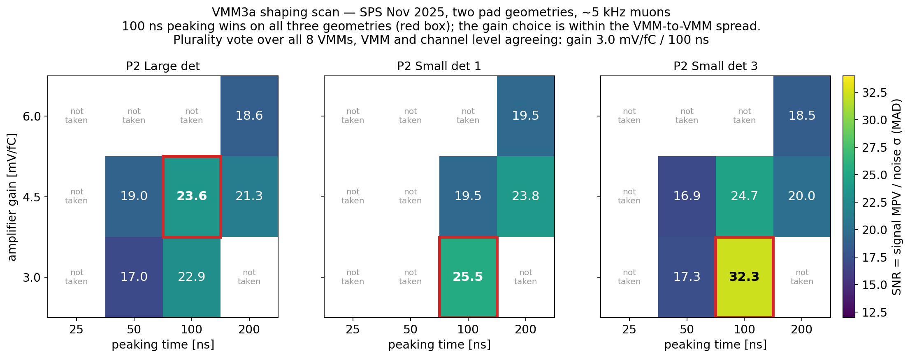
Method
Each configuration is a run pair, using the VMM's own neighbour
triggering to define its noise:
signal run: neighbour trigger off → hits where the hardware
discriminator fired
noise run: neighbour trigger on → sub-threshold hits
Noise width from the MAD (σ = 1.4826 × MAD, robust against the ADC
floor); signal from the Landau MPV of the same channels.
SNR = MPV / σnoise, computed per VMM and per channel.
Result
100 ns peaking wins on all three geometries.
The gain choice sits inside the VMM-to-VMM spread; the plurality vote over
all 8 VMMs, with VMM- and channel-level agreeing on 6 of 8, is
gain 3.0 mV/fC / 100 ns.
The two geometries behave the same — the pad size does not change the
electronics optimum.
Keep this in mind for later. This is the
SNR optimum. In July 2026 the efficiency optimum came out at
gain 4.5 and 200 ns instead — not a contradiction, and the reason is the
punchline of Act 3.
Say: "100 nanoseconds, on both geometries. Note that
25 ns was never taken here — we only scanned it the following summer. And hold
on to the fact that this is the signal-to-noise optimum, not the efficiency
optimum."
8OPTIONAL
Act 1, the rest of what exists
One slide to acknowledge, or drop entirely for time
Taken and analysed
Two geometries simultaneously under VMM3a readout: the P2 Large
fan-pad detector (256 pads, VMMs 12–15) and two compact P2 Small detectors
(VMMs 8–11).
Rate points at ~5 kHz and ~15 kHz muon rate at matched
configurations, plus spill-structure and occupancy analysis.
Trigger-based efficiency with accidental subtraction (Δt peak fit +
sideband) and per-pad maps on the true Gerber geometry.
Taken and not analysed
Pion runs — localised, much higher rate density. Zero analysis
code exists; deliberately cut (task plan §5). One outlook line, and it belongs
in the paper.
ε vs rate across the 5/15 kHz registries — not run.
Honest framing if asked: the November campaign's
job was to find the electronics working point, and it did. The rate story is
now carried by the July telescope with real tracks, which is a better
measurement than the one this campaign was going to provide.
Say only if asked: "The pion data exists. It has no
analysis yet, and I would rather show you tracks than promise you pions."
9ACT 2
Cosmic bench at Saclay
Four new detectors, external tracking, and everything you can
only learn before a beam
CORE
The Saclay cosmic bench: a vertical tower with its own telescope
Setup
M3 reference telescope: four double-coordinate (X/Y strip) resistive
Micromegas planes, two below and two above the detectors under test.
The P2 detectors sit between the telescope stations, so every track
is measured on both sides — geometry-resolved, not just triggered.
Gas Ar/iC₄H₁₀ 95/5. Two HV channels per detector (mesh, drift).
DREAM was the only readout available on the bench — which is exactly
why the beam test had to carry both electronics.
Two efficiency observables, kept separate
has_any
M3 track in the active area and
any pad fired → the detector's detection efficiency (the ceiling)
eff_reco
…and the pad centroid lands within
R of the track → detection and reconstruction (what you may quote
as tracking efficiency)
The gap between them is reconstruction, not detector. Both are
quoted throughout.
Positions from the run configuration;
the P2 plane height is refitted from the data (712 mm rather than the nominal
702).
Say: "The point of the bench is not that it has cosmics
— it is that it has an external telescope. That turns 'the detector fired' into
'the detector fired where the track went', which is what lets you separate a
dead pad from a support pillar."
10CORE
Bench efficiency, and where the missing few percent actually is
det1, 18.3 h at mesh 415 / drift 615 — eff_reco =
93.4 %, has_any = 96.8 %
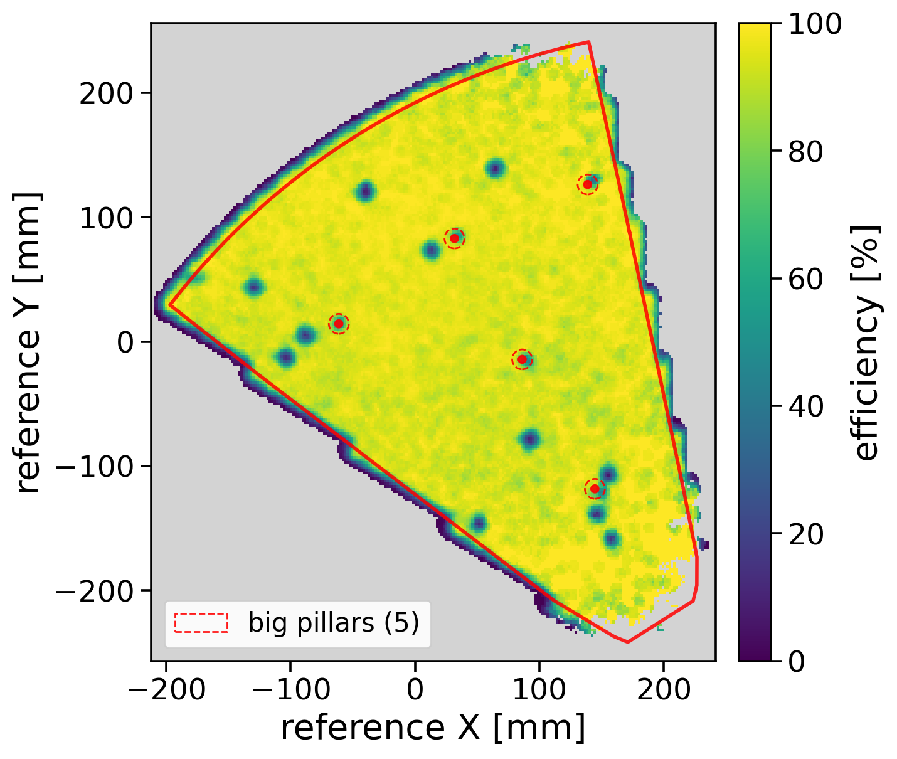
Sliding-window efficiency over the
true pad footprint.
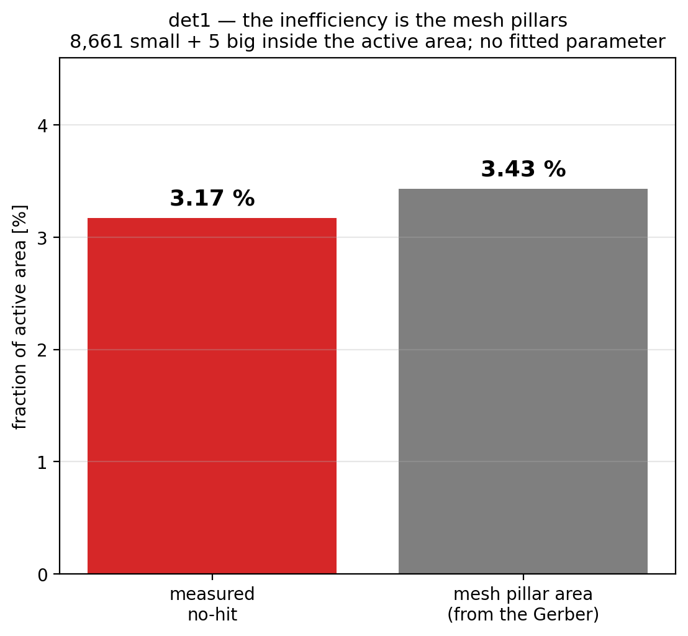
Measured no-hit fraction vs the
pillar area counted from the insulation-mask Gerber.
Loss budget
reconstructed
93.4 %
fired, centroid outside R
3.4 %
no hit at all
3.2 %
Both terms are understood
The 3.2 % no-hit is the mesh pillars. Counting the Gerber pillars
inside the live area gives 3.43 % of the active area against a measured
3.17 % — agreement to 8 % with no fitted parameter. Confirmed
directly on the five resolvable large pillars: efficiency falls to 59 % at the
pillar centre and recovers over ~10 mm (the recovery scale is the 4.7 mm
position resolution, not the 3 mm pillar).
The 3.4 % is the position estimator, and it is recoverable.
Nearest-fired-pad instead of charge-weighted centroid gives 96.2 % — so ~2.8
points is software, not detector.
Say: "This is the slide I would defend hardest. The
inefficiency is not mysterious: three points of it is a geometric feature of a
bulk Micromegas that we can count off the Gerber and predict without a free
parameter, and three more points is my own centroid algorithm."
11CORE
Four detectors, one method — and the honesty that method forces
August-2026 reprocessing, charged-up values where a run contains
charging-up
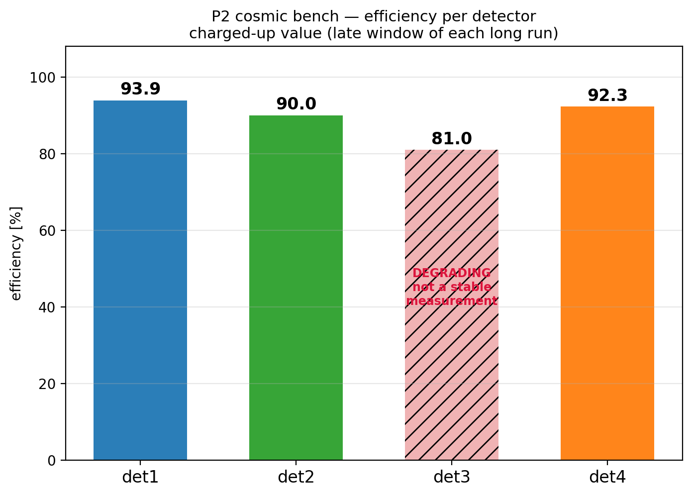
det
run
h
eff_reco
has_any
det1
415/615
18.3
93.4 %
96.8 %
det2
430/600
10.0
90.3 %
93.1 %
det3
420/820
2.0
degrading —
no single value
det4
410/610
10.4
92.3 %
94.8 %
Three conventions that change the number
Charging-up. det4 rises 74.7 % → 92.3 % over the run and
flattens after ~4 h; its rate climbs by a factor 9. The run average, 88.3 %,
understates the detector by 4 points. det1 gains 3.4, det2 gains
nothing — charging-up is not automatic even within one detector family.
Degradation is not charging-up. det3 falls 90.6 → 81.0 %
inside two hours at fixed clean HV. Averaging that produces 86 %, which is not
a measurement of anything. It is shown, and marked.
Masking matters. Before automatic hot-pad masking, 6 pads carried
69 % of all hits on det1 and pinned the centroid — eff_reco read
24.6 %. Eight pads masked, and it reads 93.4 %.
Say: "Same analysis, four detectors, and I will not
average a dying detector into a performance plot. det4 is the important one to
look at — quoting its run average would have cost me four points of a perfectly
good detector."
12OPTIONAL
Bench HV scans: the working point is on a plateau
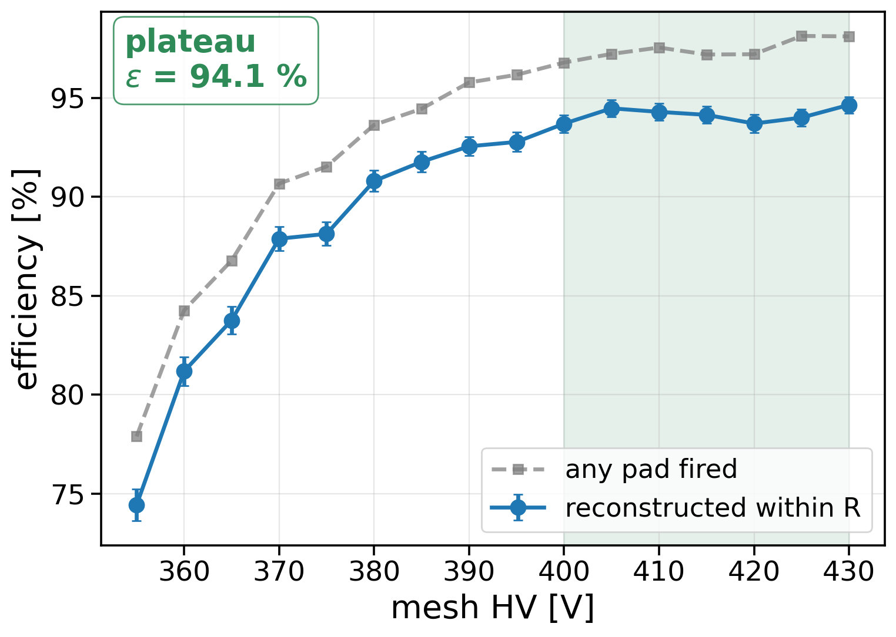
Gain scan, 16 points. Clean
turn-on; plateau from ~400 V at 93.7–94.6 %. The 415 V operating point sits on
it.
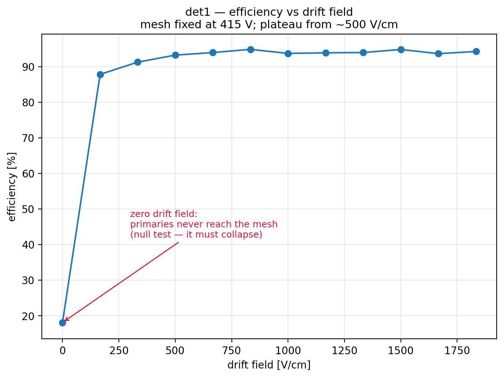
Drift scan, 12 points. Flat at
~94 % from 565 V. The lowest point is drift = mesh = 415 V, i.e.
zero drift field — efficiency collapses to 18 %, exactly where physics
says it must. A free null test.
Two things worth saying out loud: the bench reached a
plateau, and the bench contains a point where the answer is known in
advance and the analysis gets it right. Both are why the beam numbers on the
next act are credible.
Say: "The zero-drift-field point is not a failure, it
is a calibration of my own analysis — if that point had not collapsed I would
not trust the rest of the curve."
13CORE
What the bench caught before these detectors ever saw a beam
Framed as methodology: this is the value of characterising
first
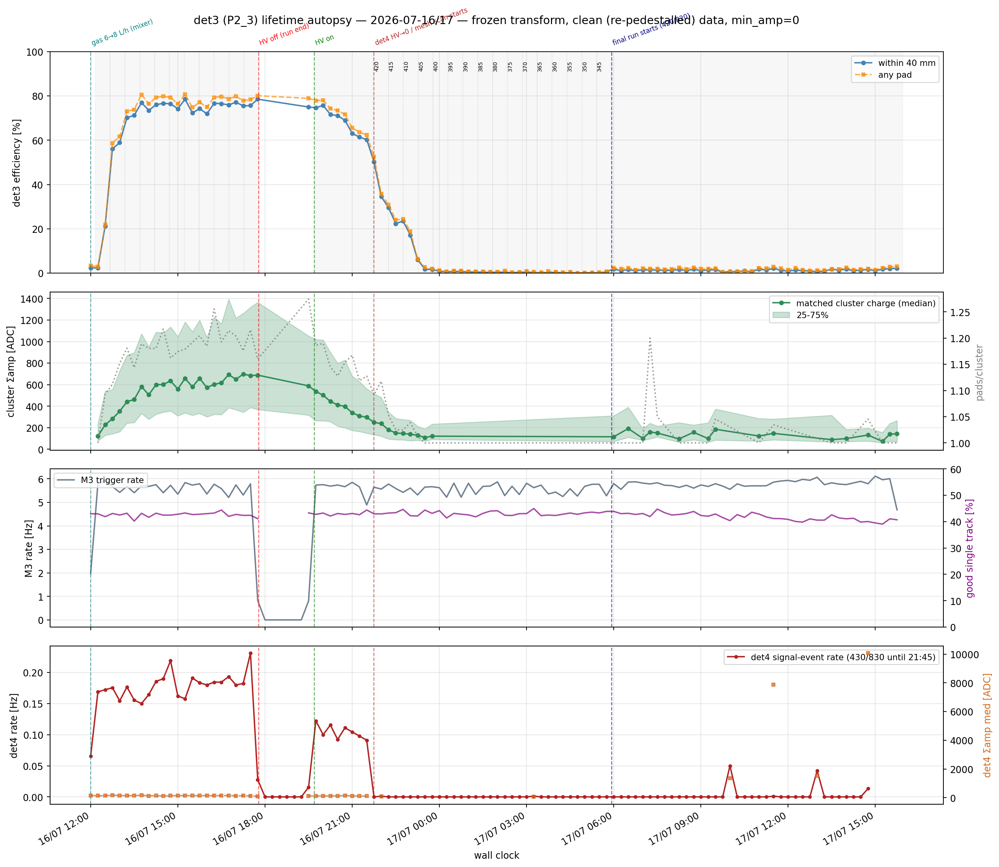
Two distinct pathologies, each diagnosed to a cause
det3 — drift-foil HV decoupling. The dying detector retraces the
healthy detector's drift-voltage ladder in peak time, amplitude and
efficiency simultaneously; the effective drift voltage walks 400 → 130 → 45 → 0
V. Magboltz rules out gas contamination: every plausible contaminant makes the
drift faster, and this got slower.
det1 — mesh-contact arcing. Not a monotonic decline but
intermittency: has_any goes 64.5 % → 96.1 % → 25.5 %
→ 10.8 % across four dates. Arrival times in the dead phases are early,
death and revival are simultaneous across the plane, and the mesh current
spikes at the moment of death.
The methodological point. Neither of these looks
like anything in an integrated efficiency number. Both were found because the
bench measures efficiency versus time, versus position and
versus arrival time at once. Two detectors were kept out of the beam
because of it.
Written up in reports/det_lifetime_autopsy_2026-07
and reports/p2_efficiency_intermittency_2026-07.
Say: "I am showing you two detectors that failed,
deliberately. The point is not that they failed — it is that the bench told us
why, in time, and neither of them wasted beam time."
14OPTIONAL
Bench timing — and one hypothesis killed by simulation
Where the bench got to
Time of arrival recomputed from the DREAM waveforms, with a validated
fine-timestamp correction and slewing correction.
σ ≈ 32 ns on the amplitude plateau; 28.8 ns under best
conditions (vertical tracks, amplitude > 600 ADC, single pad, per-channel
t₀ equalised).
Garfield++/HEED says the physics floor is 3–7 ns — so the 20 ns goal
was never physics-limited.
The trigger was exonerated by decoding the M3 telescope's own FEU:
correlation 0.03, contribution ≲7 ns.
A real per-pad structure exists: coherent diagonal bands of
±10–15 ns, verified by splitting each pad's events into independent even/odd
halves (r = 0.88).
State plainly: the bench was
drift-geometry limited — cosmics arrive at all angles through a 3 mm
gap. The beam removes that, and the beam numbers are much better.
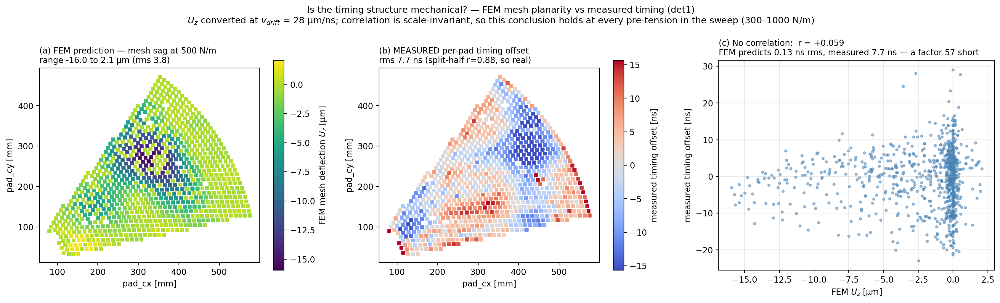
Was the per-pad timing structure mechanical? The
obvious suspect was mesh sag from the same buckling physics as slide 5. The FEM
prediction converted at vd = 28 µm/ns gives 0.13 ns rms
against 7.7 ns measured — a factor 57 short, with correlation r = +0.06.
It is not mechanical. The conclusion is scale-invariant, so it holds at
every pre-tension in the sweep.
Say: "I had a nice story that the mesh flatness was
limiting the timing. The simulation says it is off by a factor of 57, so the
story is wrong — and it is worth showing because it closes the loop back to the
manufacturing slide."
15ACT 3
SPS H4, July 2026
Three detectors in the P2 geometry, bracketed by an independent
tracker
CORE
The P2 telescope at H4 — a dress rehearsal of the tracker itself
TB_July2026_H4, 23 Jul – 3 Aug 2026, muon beam
What makes this different from Act 1
Three P2 detectors in a row, mounted as they will be installed —
same plane-to-plane distances, same mechanics, same electronics chain.
Two external EIC uRWELL reference planes bracket them over a
1370 mm lever arm. This is what turns every efficiency from
relative into absolute.
Both readouts on the same chambers: DREAM (23–29 Jul), then the P2
pads recabled to VMM3a/SRS (30 Jul – 3 Aug) with DREAM keeping the uRWELLs
alive as reference throughout.
Say: "This is the slide that makes the claim. Three P2
detectors at their real spacing, and — the part we did not plan for — two
independent reference planes around them. That second ingredient is why I can
quote an absolute efficiency rather than a relative one."
16CORE
The absolute measurement, in one figure
P2_MID at the working point (mesh 450 / drift 700) — 1 155 012
uRWELL tracks in the fiducial
Method, and the hygiene that makes it defensible
Two-point tracks from the front/back uRWELLs (residual spread ≤0.66 mm),
projected to each P2 plane through a freely fitted affine frame — which
comes out as a proper rotation of −60° with unit singular values and no
shear, at every station and every scan point.
Denominator hygiene: triggers the probe FEU never recorded are
removed from the count, HV-settle and spark-veto windows are removed by time,
and tracks must land in the pad fiducial (9 mm).
Efficiency = a P2 cluster within 15 mm. The probe-radius scan plateaus by
10 mm with an accidental slope of 7 × 10⁻⁴ per 10 mm → ±0.3 % systematic.
What falls out for free
3.46 mm
residual rms, all three
stations = 12 mm/√12
1.05–1.08
pads per cluster
That equals binary pad response with no charge sharing — the
resolution is the pad, exactly as designed, and it is the number any Q²
statement rests on.
Deliberately mis-setting the channel map moves the efficiency
to 60 %. Useful rule for the collaboration: if efficiency reads far below
90 %, suspect the mapping before the detector.
Say: "The residual is 3.4 mm on all three stations, and
12 millimetres over root twelve is 3.46. That is not a fit — it is the pad
size. So the detector is doing exactly what a binary pad readout should do."
17CORE
One muon, five chambers
NEW
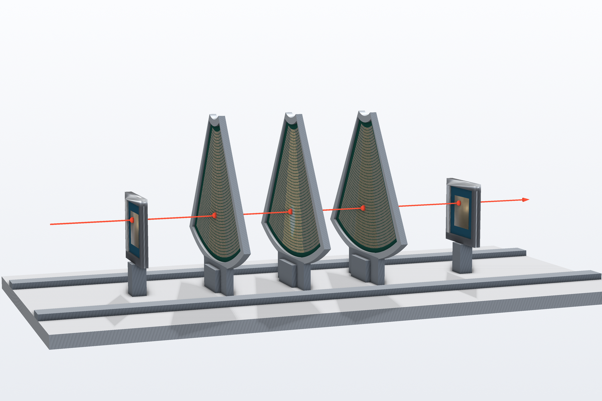
A genuine five-fold coincidence, drawn through the
real geometry: highstat_eff_1 / beam_commissioning_00, geventId
230000168979. Two uRWELL references at z = 0 and 1370 mm, the three P2 BASKET
fans at 320 / 630 / 940 mm, on the H4 rail. Every marker is a
recorded hit — the uRWELL track has one cluster in each of its four
views, and each P2 station fired exactly one pad.
plane
pad
amplitude
pads fired
track → pad
P2_IN
627
212
1
1.48 mm
P2_MID
627
1330
1
1.30 mm
P2_OUT
627
1219
1
1.07 mm
Selected from 476 five-detector coincidences (76 % of the
tracked events in the window) as the one with the tightest track-to-pad
distances. The population's mean residual is 4.81 mm, which is the published
rigid-fit RMSE (4.83–4.87 mm) — the 3.46 mm pad quantisation is the
affine-fit number quoted on slide 16.
The same muon fires the same pad number, 627, on all three
stations — which is what a beam parallel to better than 0.5 mrad through
three planes aligned to under 2 mm must do. It is also a free cross-check that
the three independent channel→pad maps agree, including P2_IN's flipped
c_5_top ribbon.
The scene is built from the run configs, not drawn by hand: all
1280 pads are placed as their true rotated rectangles from the Gerber map, the
fan is the real annulus sector (r = 150.7 → 635.0 mm), and the instrumented
sectors 3–6 are the bright ones. MX17 is absent because it was only installed on
1 August — this event is from 25 July.
Note the amplitudes: 212 ADC on P2_IN against 1330 and
1219 on MID and OUT. P2_IN ran at lower gain throughout, which is the same fact
that explains its shifted turn-on (slide 24) and its low VMM efficiency
(slide 22) — visible in a single event.
Say: "This is the P2 tracker. Two reference planes, three
P2 fans at their real spacing, and one muon recorded by all five — one pad per
plane, the same pad number on all three, because the beam is parallel to half a
milliradian."
18OPTIONAL
The same event, two other ways to look at it
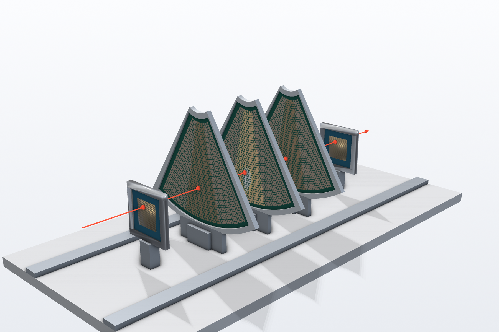
Three-quarter view — the fan pad
structure and the instrumented sectors are visible.
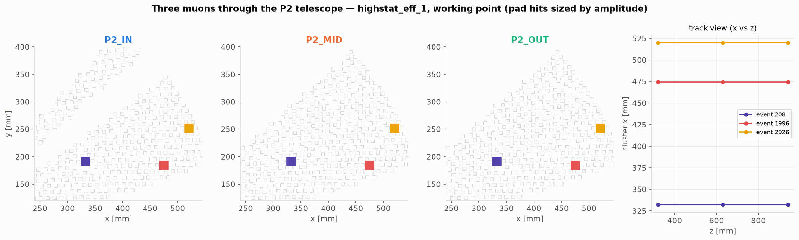
The pad-level 2D version: three
single-cluster events on the true fan layout, hit pads sized by amplitude, and
leading-pad position against z.
Keep whichever suits the room. The 3D render sells "this is the
P2 tracker in its final configuration"; the 2D display is the one that shows
one pad per plane per muon across several events, which is the
cluster-size and spatial-resolution story on slide 16. Both are measured
five-fold coincidences from the same run.
Say: "Same physics, two framings — the render for what
it is, the pad display for what it measures."
19CORE
96–97 % absolute efficiency — and a full account of the rest
96.5 %
P2_IN, z = 320 mm
97.1 %
P2_MID, z = 630 mm
96.0 %
P2_OUT, z = 940 mm
Working point, highstat_eff_1,
~1.15 M uRWELL tracks per station, ±0.3 % systematic, statistical error
negligible
Loss budget [percentage points]
mechanism
IN
MID
OUT
total inefficiency
3.5
2.9
4.0
— no P2 cluster anywhere
2.9
2.4
3.3
— cluster present, >15 mm away
0.6
0.5
0.6
localised cold pads
2.9*
0.1
0.1
drift across the run
0.4
1.3
1.4
spark-veto dead time (live time, not ε)
0.5
0.2
4.1
Per-pad uniformity in the beam core: median 0.957 / 0.961 /
0.918. P2_OUT's whole distribution sits ~4 points low — a uniform gain deficit,
not damage.
83 % of all misses are "the station recorded nothing for
this trigger." So the deficit is a uniform gain/threshold floor, not
mis-reconstruction, not misalignment and not geometry. More voltage — or the
faster gas at equal gain — attacks it directly.
The two localised features, named
*P2_IN connector 11 reads 0.72 in-beam where the same
channels give 0.955 on MID and 0.922 on OUT; connector 14 is dead on the
fringe. This is a channel-block effect — a genuine cabling/FEU suspect, unique
to P2_IN, and an action item before installation.
The pale pads that repeat at the same coordinates on all three
stations are the known support pillars. They cost only 0.07 pp in
this beam spot.
Say: "96 to 97 percent on all three planes against an
independent tracker. And I can tell you where the missing three percent is:
eighty-three percent of the misses are the detector not responding at all,
which is a threshold floor — plus exactly one real hardware fault, on one
connector of one station."
20CORE
ε(HV): the bench predicted the beam
NEW
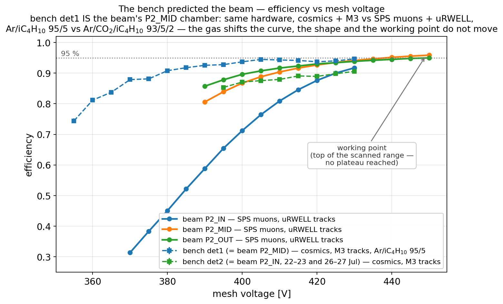
The claim, and it is stronger than we thought
The hardware logbook settles the identity: P2_MID is det1 and P2_OUT is
det3, the very chambers the cosmic bench characterised, and neither station
was touched during the beam test. So this is the same chamber measured
twice — different gas, different probe, different laboratory.
The bench reproduces the shape of the turn-on and
predicts the working point. The gas shifts the curve; the shape and the
working point do not move.
What both halves agree on
A clean, monotonic gain turn-on over ~50 V.
The knee in the same place, and the operating point above it.
On the beam, no station has reached a plateau by the HV ceiling —
and that ceiling is the working point. The bench, at lower gain demand, did
plateau.
And on the drift side
Beam: 0.157 at zero drift field → 0.896 by 500 V → flattening above
~850 V near 0.974.
A separate transparency run pushed to gap 510 V: occupancy falls only 2–3 %
with no turnover knee — mesh transparency is still fine past our HV
ceiling.
Both halves existed for a month before anyone put them on one
axis. This figure is new for this talk.
Say: "This is the slide that validates the whole bench
programme. Same chambers, different gas — the shape and the working point
transfer. That is what a bench is for." Be precise that the gas
differs, so the absolute value is not expected to match on this axis.
21CORE
…and the transport half: the same two chambers, in two laboratories
NEW
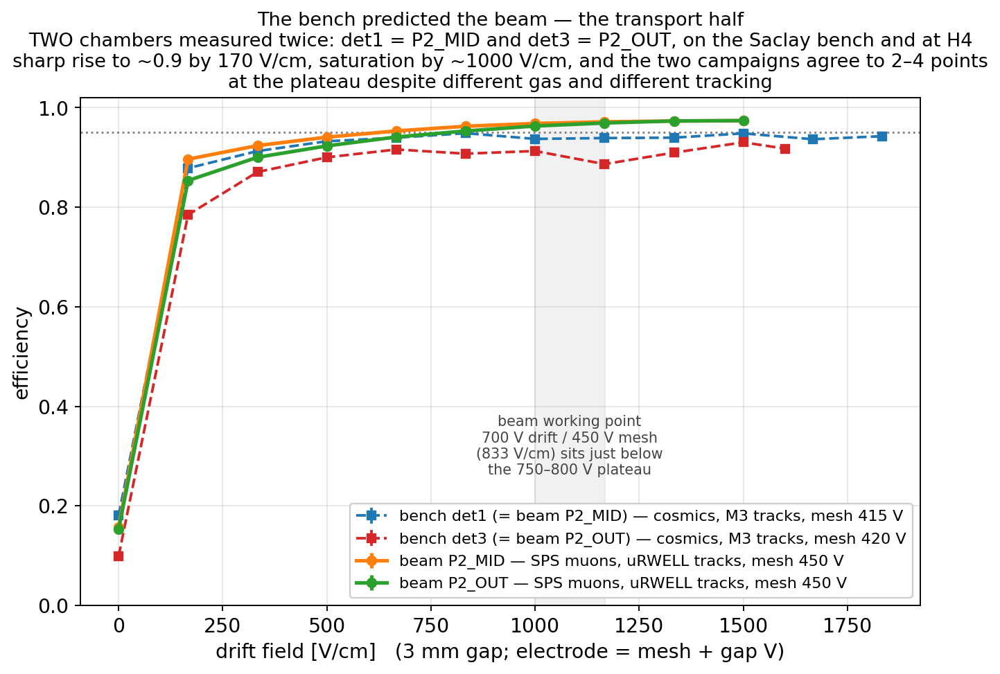
Why the axis is a field, not a voltage
The two campaigns sit at different mesh settings — 415/420 V on the bench,
450 V in the beam — and in both the drift electrode reads mesh + gap. Plotted
against the drift field across the 3 mm gap, the comparison is
like-for-like.
Four curves, two chambers, two gases, two track
references — and they land within 2–4 points of each other at the
plateau. On the transport axis even the value transfers, which the gain
axis cannot claim.
What it says
Sharp rise to ~0.9 by 170 V/cm; saturation by ~1000 V/cm.
The beam working point, 700 V drift at 450 V mesh (833 V/cm), sits
just below the plateau — deliberately, to keep the drift electrode away from
its trip point.
The zero-field point is measured on both sides: 0.15–0.18, i.e. only the
charge created inside the amplification gap.
Say: "This is the same detector, measured at Saclay
with cosmics and at H4 with muons. On the drift axis the two campaigns agree to
a few points — so when the bench says a working point is safe, it is."
22CORE
Timing: the 20 ns goal is met on two of three stations
NEW
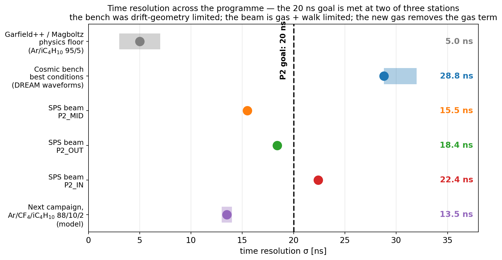
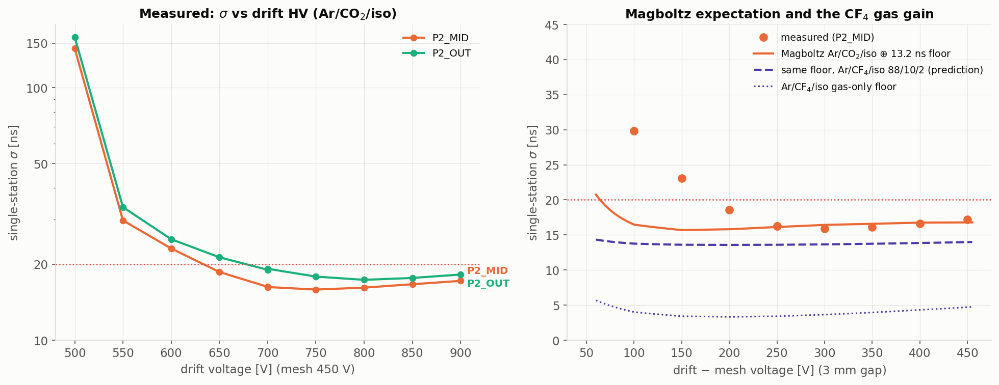
The measurement
Waveform TOA, corrected in two stages: clock phase (fitted
per FEU — the slopes are −9.6 / −6.6 / −5.5 ns per unit, so never assume
a common phase) then time-walk.
Station vs trigger: P2_MID 15.5, P2_OUT 18.4, P2_IN 22.4 ns, stable
to <0.5 ns over 4.5 h.
σ vs drift plateaus at 750–800 V; the 700 V working point is within
0.5 ns of optimum. σ vs mesh improves monotonically with no plateau at
the ceiling.
The decomposition, and the way down
The drift curve is reproduced by the Magboltz gas floor ⊕ a fitted
13.2 ns non-gas term — so the budget is now split into a gas part we can
change and an electronics/walk part we cannot, yet.
The new gas (next slide) drops the gas floor 8.8 → 3.3 ns, which
predicts ≈13.5 ns at P2_MID: the next campaign will be
electronics-limited, not gas-limited.
Garfield++ physics floor is 3–7 ns, so there is a long way to go before
physics is the obstacle.
Say: "Twenty nanoseconds is the goal; we are at 15.5 on
the best station. And the reason I can promise further improvement rather than
hope for it is that the drift curve decomposes into a gas term and a 13
nanosecond electronics term — and we have already changed the gas."
23CORE
DREAM vs VMM3a on the same chambers
NEW
Same detectors, same uRWELL tracks, same cuts — the comparison
the dual-electronics strategy exists to make
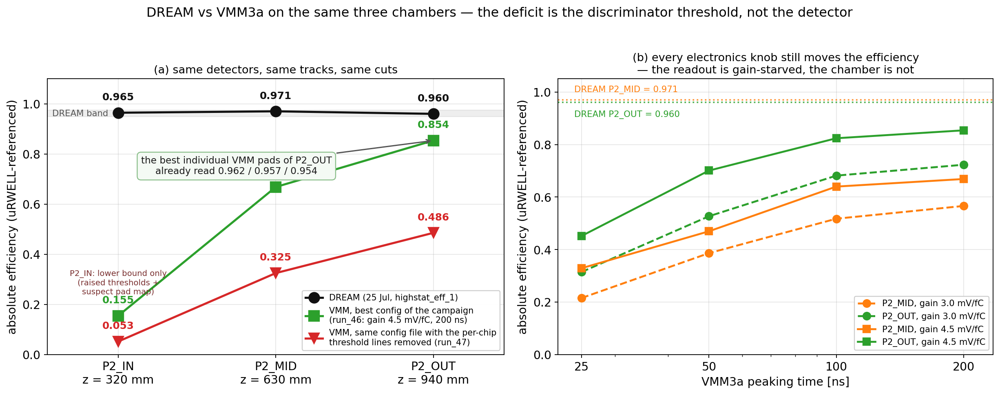
Why this is now a fair comparison
Until August this could not be drawn. The VMM number was a whole-station
scalar over every trigger while only 3 of ~10 connectors carried VMM
hybrids — a different denominator, so the two could not share an axis.
It has since been re-derived against the same uRWELL tracks, in the same
fiducial, with the same probe radius, over 78 sub-runs. Now they can.
And the geometry checks out independently: the freely
fitted uRWELL→pad transform gives the same −60° proper rotation, the
residual is the same 3.4 mm, and the VMM finds the same dead pad as
DREAM — pad 635 at (411, 237) mm, two completely different electronics
chains, same defect, same coordinates.
The result
station
DREAM
VMM, best config
P2_IN
0.965
0.155 (lower bound)
P2_MID
0.971
0.669
P2_OUT
0.960
0.854
P2_OUT is the clean case and the honest headline: 85 % where DREAM
gives 96 %, on the same chamber.
P2_IN is a lower bound, not a detector statement: three of six chips
at raised thresholds, and a residual of 4.7 mm against 3.4 mm elsewhere with a
20–30 mm shoulder — the signature of a partly wrong channel→pad map, on the
plane with the known mapping trouble.
Cluster size: VMM 1.11–1.18 pads vs DREAM 1.05–1.08.
Say: "Same chambers, same tracks, same cuts — 85 % on
the VMM against 96 % on DREAM. That gap is the interesting result of the
campaign, and the next slide is why it is an electronics number, not a detector
number."
24CORE
That gap is the discriminator threshold — three independent handles
NEW
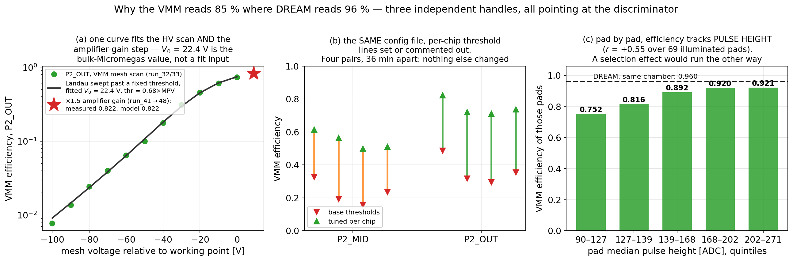
The decisive arguments
The threshold DAC alone moves it. The same configuration file
36 minutes apart, with the per-chip threshold lines set or commented out:
P2_OUT 0.486 → 0.822. Nothing else changed — same gain, peaking time, HV, gas,
beam. Every such pair in the campaign does this.
Amplifier gain moves it, and gain cannot change a detector.
3.0 → 4.5 mV/fC at fixed HV: 0.723 → 0.822.
Pad by pad, efficiency tracks pulse height (r = +0.55 over 69
illuminated pads). A selection effect would run the other way: a channel
with a high threshold records only its big pulses, so it would show a high
median with a low efficiency.
One curve fits both. A Landau swept past a fixed threshold fits the
11-point mesh scan and is required to pass through the ×1.5 gain point;
it returns a gain e-folding of V₀ = 22.4 V — the physical
bulk-Micromegas value, and not an input to the fit. The discriminator sits at
0.68 × the most probable signal.
The clincher
The best individual VMM pads already read 0.962,
0.957, 0.954. DREAM measured 0.9604 on that same plane.
A detector cannot be 96 % efficient on some pads and 60 % on others
under one uniform beam. A readout with one global threshold per chip and no
per-channel trim can — and the VMM's per-channel trim DACs were never
used.
Excluded by measurement, not by argument
Tracks outside the active area (all 837 338 are inside) ·
geometry and channel map on MID/OUT · the coincidence window (3σ→20σ moves it
0.0039) · position matching and clustering (95.7 % of misses have nothing
within 15 mm at any time in ±10 µs) · rate, dead time and pile-up (flat
against spill time, trigger multiplicity and time since the previous trigger) ·
the track sample · missing captures (100 % coverage) · charge sharing at pad
boundaries · a common-mode DAQ loss (MID and OUT miss almost independently:
52.1 % joint against 50.5 % predicted).
Say: "The detector is fine. The threshold sits at
roughly the most probable signal, so a few percent of gain is worth ten points
of efficiency — and the pads that happen to see the biggest pulses already give
me the DREAM number in the very same run." This is the strongest single
result of the VMM arm — do not rush it.
25CORE
The three planes tracking on their own — and what that costs
NEW
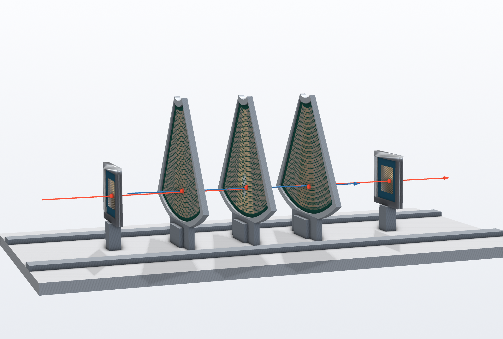
One muon, two independent answers:
red = the uRWELL reference track,
blue = a straight line through the
three P2 cluster centroids alone.
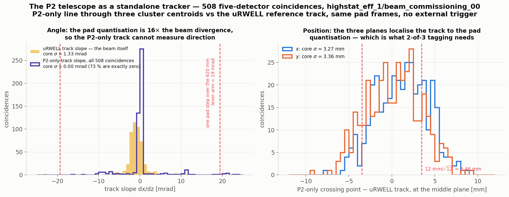
The measurement
508 five-detector coincidences, 80.9 % of all tracked events. For
each one, a P2-only line through the three cluster centroids, compared with the
uRWELL track in the same per-station pad frames — no external trigger, no frame
composition.
The P2 telescope localises but does not collimate.
Crossing point at the middle plane: 3.3 mm = 12 mm/√12. Direction:
not measurable here.
Why, in one number
One pad step over the 620 mm lever arm is 19 mrad.
The H4 muon beam diverges by 1.2 mrad.
So 73 % of coincidences fire the same pad on all three planes and the
P2-only track is exactly parallel to the axis by construction. Cluster
centroids do not rescue it — multi-pad events give worse angles.
This is a statement about pads and lever arm, not about the
chambers: it is the in-situ 2-of-3 tagging geometry that P2 will actually use,
and tagging needs the crossing point, which is exactly what the three planes
deliver.
Say: "We asked whether three P2 planes can track without
a reference. They localise a track to the pad quantisation — three and a third
millimetres — which is what the in-situ efficiency scheme needs. They cannot
measure the angle of a beam this parallel, and the reason is arithmetic: one
pad over the lever arm is nineteen milliradians against a one-milliradian
beam."
pillar budget, charging-up, two pathologies caught
SPS Jul 2026
P2_IN / MID / OUT
DREAM
uRWELL, absolute
96.5 / 97.1 / 96.0 %
22.4 / 15.5 / 18.4 ns
3.46 mm = pad/√12
the P2 tracker works in its own geometry
SPS Jul 2026
same three
VMM3a
uRWELL, absolute
0.155* / 0.669 / 0.854
22.5 ns (BCID-limited)
3.4 mm, same as DREAM
the VMM deficit is the threshold, not the chamber
What is established
A three-plane P2-geometry telescope runs at 96–97 % absolute
efficiency against an independent reference, settling to ≈96/95 % after ~1 h of
beam.
Spatial resolution is the pad, 3.46 mm, identical on all three
stations — binary response, no charge sharing.
The 20 ns timing goal is met at two of three stations, and the
remaining budget is decomposed.
The bench method transfers: it predicted the working point and it
caught two hardware pathologies before beam time was spent.
Both readouts see the same geometry and the same defects — three
independent chains agreed on one flipped ribbon.
What remains before installation in P2
VMM per-channel threshold trim + time calibration. This is the
single highest-value item: the trim DACs were never used, and σ is pinned at
the 22.5 ns BCID bin for want of calibration runs.
Confirm the CF₄ gas timing directly — one short DREAM run on the new
gas turns a validated prediction into a measurement.
Fix P2_IN connector 11/14 and re-derive its channel map.
P2_OUT: uniform ~4-point gain deficit plus spark propensity — a
gain-calibration and HV-contact candidate.
Push the HV ceiling: no station has plateaued in mesh voltage, and
mesh transparency is still fine past 900 V.
Pion / high-rate-density analysis; the untouched MX17 dataset.
Say: "If you photograph one slide, photograph this one.
Four rows: two campaigns, two readouts, one detector generation — and the last
column is what each one actually settled." Then close on the trim DACs:
"the most valuable thing we can do next costs no beam time at all."
27OPTIONAL
Optional slides
Strong material, in priority order — promote if the dry run
comes in short
OPTIONAL
ε(HV) on the beam, on its own axes
The uRWELL-referenced curves without the bench overlay — use
these if slide 19 is cut, or as the backup to it
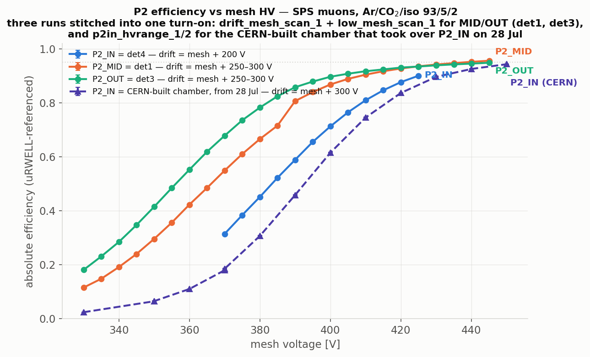
vs mesh.MID 0.81→0.96 and OUT
0.86→0.95, now measured from 330 V after the low-mesh scan was put
through the same reference; IN is drawn per chamber —
det4 on 25 Jul, and the CERN-built one from 28 Jul rising to 0.94.
No station plateaus by the HV ceiling — and the ceiling is the working
point.
vs drift, at mesh 450 V. The
450 V point is zero drift field (prompt conversions only, ~16 %); the
curve rises to 0.90 by 500 V and flattens above ~850 V near 0.974.
The zero-drift-field point is the same free null test the bench
gave (slide 12): the efficiency collapses exactly where physics says it must, on
two independent setups. A separate transparency run pushed to gap 510 V and saw
occupancy fall only 2–3 % with no turnover — mesh transparency is fine past our
ceiling.
Say: "Efficiency is mesh-dominated and we never reached
the plateau — so the 96–97 % is a lower bound on what these chambers can do,
limited by how much voltage we were willing to put on them."
28OPTIONAL
How the timing number is actually made
Raw → ftst clock phase →
time-walk, at the working point.
σ vs mesh, both scan campaigns
(dashed = after the P2_IN chamber swap). MID 21.8→16.2 ns, OUT 24.3→19.2 ns over
390→450 V.
The one methodological point worth making out loud:
the ftst clock-phase slope is fitted per FEU — −9.6, −6.6
and −5.5 ns per unit. Assuming a common clock phase across the three stations
would have put tens of nanoseconds of pure bookkeeping into the answer. Best
algorithms: frac30 for MID/OUT, dCFD for IN.
Say: "Two corrections, both fitted from the data, and the
clock phase is different on every front-end unit. Without that the timing number
is meaningless — with it, it is stable to under half a nanosecond over four and a
half hours."
29OPTIONAL
The campaign in one picture
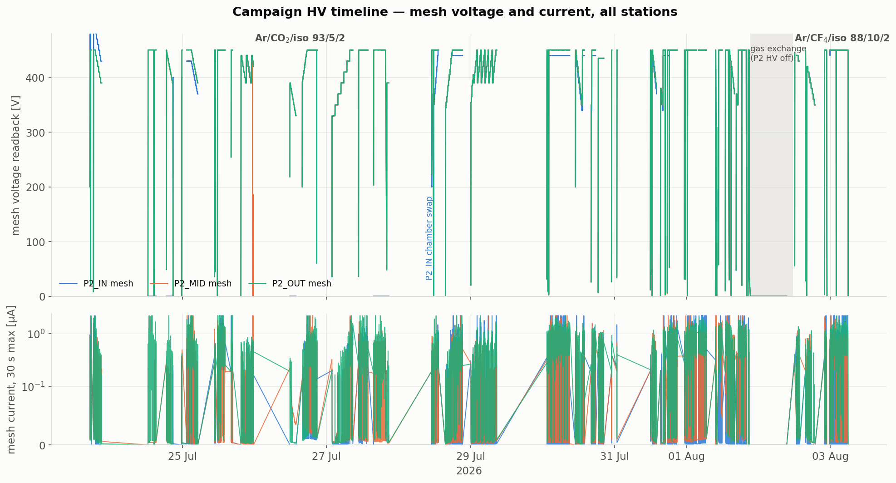
Mesh voltage readback (top) and 30 s maximum mesh current
(bottom) for all three stations across the 12 days. The staircases are the HV
scans; the shaded window is the gas exchange (P2 HV off overnight 1→2 Aug); the
P2_IN chamber swap on 28 Jul is marked.
Say: "Twelve days, three stations, every scan visible.
This is also the slide that proves the HV was where I say it was — the
efficiency analysis reads its live time from this monitor, not from the run
configuration."
30OPTIONAL
Charging-up, caught in the act
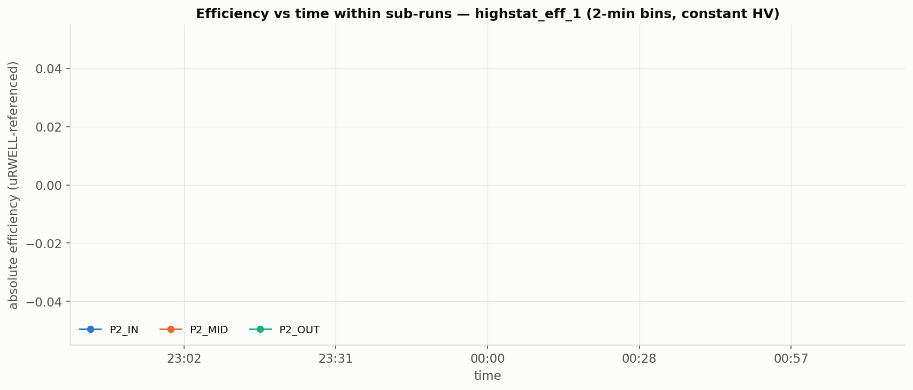
The result
Efficiency in 2-minute bins at constant HV and 4.6 kHz.
MID and OUT decay smoothly
with a 30–40 min time constant, reset over the beam pause, then
re-decay at 30 % lower rate. IN is flat.
The decay re-arms during beam-off — that is the
signature of a charging process, not beam drift, rate loading or DAQ
drift. P2_IN's flatness says it is chamber-specific, not environmental.
Recommended wording: "96–97 % initially, settling to ≈96 % / 95 %
after about an hour of beam at 4.6 kHz." Quoting a single number without this
figure is the one thing a careful reviewer would object to.
Say: "The reason I can call this charging-up rather
than a rate effect is the gap in the middle — the efficiency comes back up over
the beam pause and then decays again."
31OPTIONAL
The gas change — predicted, then observed
The same VMM mesh scan on both gases,
31 Jul vs 2 Aug.
The prediction (Magboltz, 1 Aug, 5 mixtures)
Chosen mixture Ar/CF₄/iC₄H₁₀ 88/10/2:
drift velocity
4.42 → 10.65 cm/µs (×2.4)
full-gap drift time
67.9 → 28.2 ns
gas timing floor
8.8 → 3.3 ns
mesh for equal gain
410 → 426 V (only +16 V)
primary clusters
26.7 → 28.8 /cm
40 % CF₄ mixtures were rejected: they need +125 to +179 V.
Observed in data
The turn-on shifts right by ≈20–25 V — direction and rough size of
the equal-gain prediction.
The drift latency handle shortens: gas-B points sit ~30 ns earlier
at gap 150, and the low-field excess over plateau shrinks 73 → 42 ns.
No spark penalty from CF₄ in its 11 hours — a standing worry about
CF₄ mixtures, so far absent.
What this cannot yet say: the σ improvement is a
prediction validated in shape. The DREAM waveform timing only exists for
gas A, because by then the P2 pads were on the VMM. Measuring it directly is
the strongest argument for one short DREAM run next time.
Say: "We predicted a 2.4× faster gas needing only
16 volts more, we changed the bottle mid-campaign, and both the turn-on shift
and the drift latency moved the way the prediction said."
32OPTIONAL
The full (mesh, drift) efficiency surface
Efficiency over a 7×7 (mesh,
drift−mesh) grid.
σ over the same grid — the timing
companion.
Efficiency is mesh-dominated; the drift dependence is
mild above gap ≈200 V. The timing optimum is a ridge at high mesh and
gap ≈300–450 V, and at low drift field the drift-time spread explodes past
100 ns. P2_IN's lower gain shows up as the whole surface shifted one column
right.
Say: "Two 7-by-7 grids, so the working point is not a
guess. Efficiency wants mesh; timing wants a bit of drift field as well — and
they do not fight each other."
33OPTIONAL
Three methods, one answer
Why they differ, and by how much
station
tag-probe
uRWELL
bias
P2_IN
0.925
0.965
−4.0 pp
P2_MID
0.963
0.971
−0.7 pp
P2_OUT
0.925
0.960
−3.5 pp
The tag-probe numbers are biased low because the tag position is
built from the other two stations' 12 mm pad centroids, so the prediction
is smeared by several mm. The bias is smallest for MID, which is
interpolated, and largest for the outer stations, which require
extrapolation.
That gap is the clearest demonstration of what the
external reference buys. The n_tag-weighted mean of the per-pad map
reproduces the station scalar to 0.1–0.2 pp, so the tag-probe analysis is
internally consistent — it is simply limited by its own tagging planes.
The third curve is a clustering-free per-channel threshold count
from the raw zero-suppressed stream: a shape check, not an efficiency.
Say: "Before we had the uRWELLs we would have quoted
92.5 percent. The external reference is worth four points on the outer
stations — and knowing that is worth more than the four points."
34OPTIONAL
Sparks and HV health across twelve days
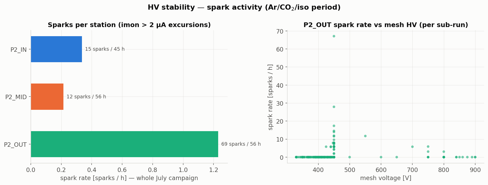
period
h@HV
IN
MID
OUT
DREAM phase, gas A
49–60
0.3
0.2
1.3
VMM phase, gas A
35
1.6
0.5
0.1
VMM phase, gas B
11
1.4
0.2
0.3
Sparks per hour. Counted as 30 s windows with mesh
Imon > 2 µA while at voltage.
Three separate stories
P2_OUT was the July offender: 69 sparks, up to 11 % dead time in a
single sub-run, and current excursions that grow with drift field
(0.20 → 0.47 µA up to gap 500) — then it conditioned quiet by August.
The new P2_IN chamber sparks at ~1.5/h through the whole VMM phase:
normal conditioning for a fresh chamber, worth watching.
No CF₄ spark penalty in 11 hours. Zero HV trips after 25 Jul.
Important bookkeeping: spark-veto windows are removed from the
denominator, so this costs DAQ live time, not detector
efficiency.
Say: "This is a metallic, non-resistive mesh, so sparks
are the thing you have to prove you can live with. One station was noisy and
conditioned itself quiet, and CF₄ did not make it worse."
35OPTIONAL
Rate: efficiency is flat, and the fake-match background is not the problem yet
NEW
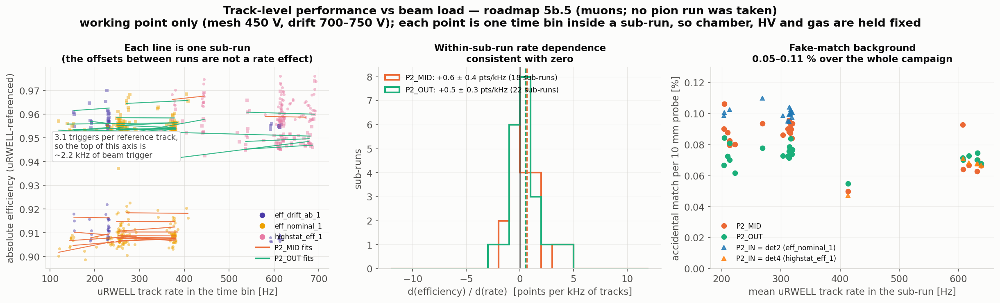
How the rate axis is built
No pion run was taken, so there is no high-density point. Instead the
efficiency is binned inside each sub-run: every bin gives an
instantaneous track rate and an efficiency measured under identical conditions
— same chamber, same HV, same gas, minutes apart.
Within sub-runs: +0.6 ± 0.4 (MID) and
+0.5 ± 0.3 (OUT) points per kHz — consistent with zero up to
~700 Hz of reference tracks, about 2.2 kHz of trigger.
The trap, worth stating
Fitting across sub-runs instead returns +12 points/kHz, which is not a
rate effect: P2_MID sits ~4 points higher on 25 Jul than on 27–28 Jul at the
same nominal working point, and that offset happens to correlate with rate.
Sub-run-average rates are useless here — they are dominated by dead time.
Fake matches
The accidental match probability per 10 mm probe stays between
0.05 and 0.11 % across the whole campaign — the combinatorial
background a three-plane coincidence has to reject is negligible at these
rates.
Say: "Efficiency does not care about the load we could
reach, and the accidental background is a tenth of a percent. The honest caveat
is that our lever on rate is a factor two, not a factor twenty — the pion run
that would have given that was not taken."
36OPTIONAL
Three chambers passed through P2_IN — the CERN-built one is the last
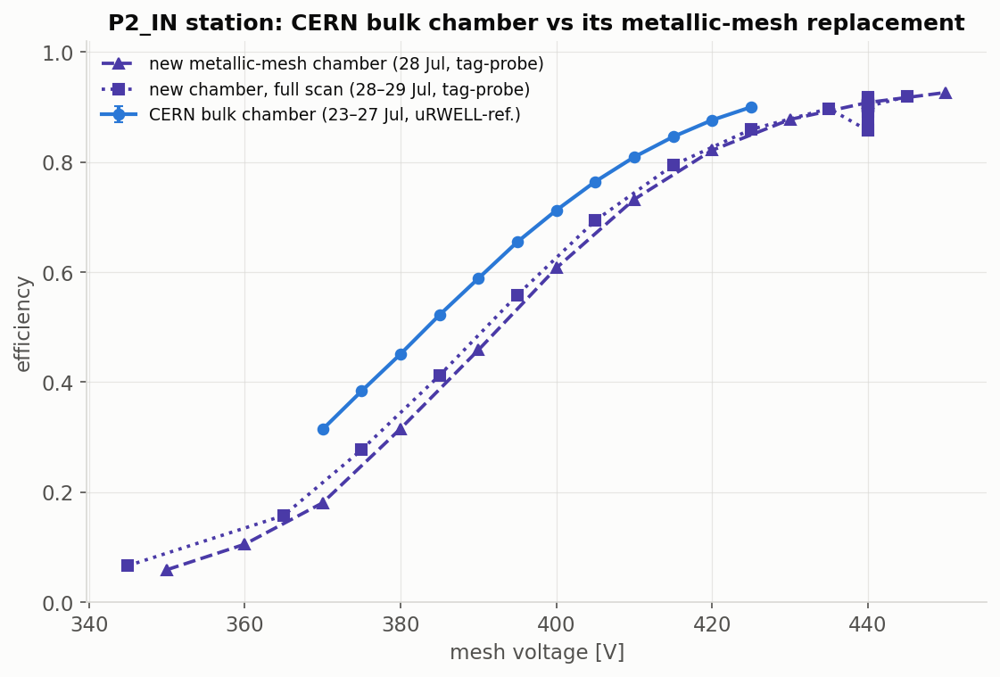
What happened
22–23 Jul:det2, which showed ~20× low signal on the first
beam day — a drift HV contact problem.
24–25 Jul:det4, which turned out to have a leaky drift
frame. This is the chamber in the 25 Jul curve on the left, and in the
high-statistics run the headline numbers come from.
26–27 Jul: det2 again, contact believed repaired; pulled 27 Jul at
15:00 after its amplitude visibly declined through a run.
28 Jul onward: the CERN-built chamber, commissioned from
scratch that morning. The entire VMM campaign ran with it.
Both have full curves
The CERN chamber turns on 10–15 V above det4 and reaches
0.94 at mesh 450 against the uRWELL reference — and unlike det4 it was
scanned into its plateau region, 200 → 450 V from scratch.
In the timing scan repeated after the swap it tracks MID/OUT, where
det4 sat flat at ~32 ns below 385 V (amplitude-limited).
Useful for the collaboration: a chamber that is declining
shows it in amplitude and efficiency-vs-time together, which is exactly
the bench signature from Act 2 — the same diagnostic worked on the beam.
Say: "We swapped chambers mid-campaign and got full
turn-on curves for both. The replacement is better, and it is the one every VMM
number in this talk was taken with."
37OPTIONAL
The VMM configuration scan — what to actually set
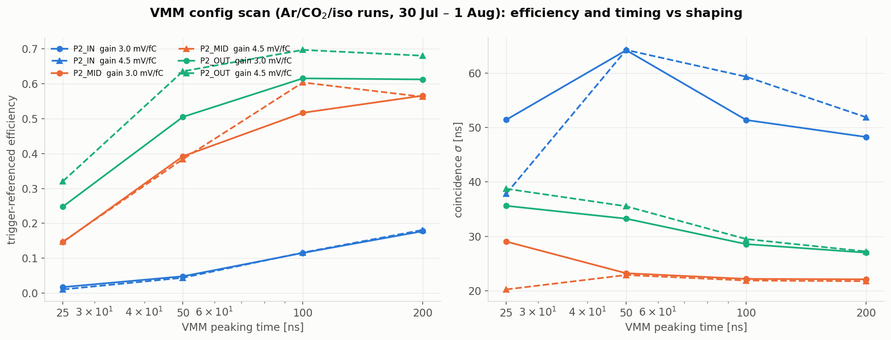
Result
Efficiency rises steadily with peaking time; the best settings are
gain 4.5 mV/fC with 100–200 ns.
Timing improves ~7 ns from 25 → 200 ns peaking but stays
BCID-dominated at the 22.5 ns quantisation.
The Act 1 / Act 3 tension, resolved. November 2025
said gain 3.0 / 100 ns; July 2026 says 4.5 / 200 ns. Both are right, because
they optimise different things:
SNR asks how far the signal sits above the noise width —
longer shaping filters noise, and more gain amplifies both equally, so gain
barely matters.
Efficiency asks how much signal clears a fixed discriminator
— and there, more gain is pure profit.
So the honest recommendation for P2 is: set the gain high and trim the
thresholds per channel, rather than choosing gain from an SNR table.
State, do not fix: VMM σ is pinned at the BCID bin
because no time-calibration runs exist. That is an outlook item, not a defect.
Say: "These two campaigns look like they disagree about
the gain. They do not — one is optimising signal-to-noise and the other is
optimising signal-over-threshold, and for P2 it is the second one that pays."
38OPTIONAL
Bench detail: all four detectors, every scan
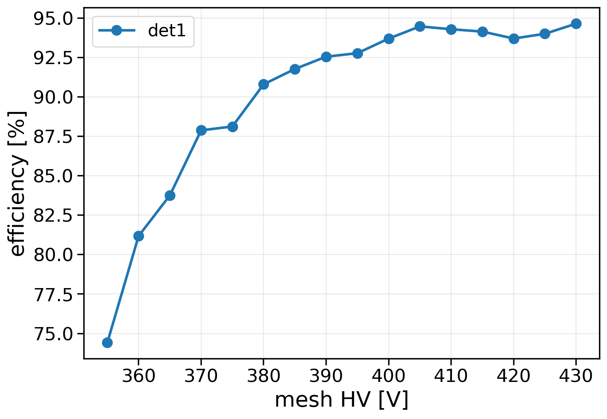
Gain scans overlaid — det1 plateaus by
400 V; det2 is still rising at the top of its range.
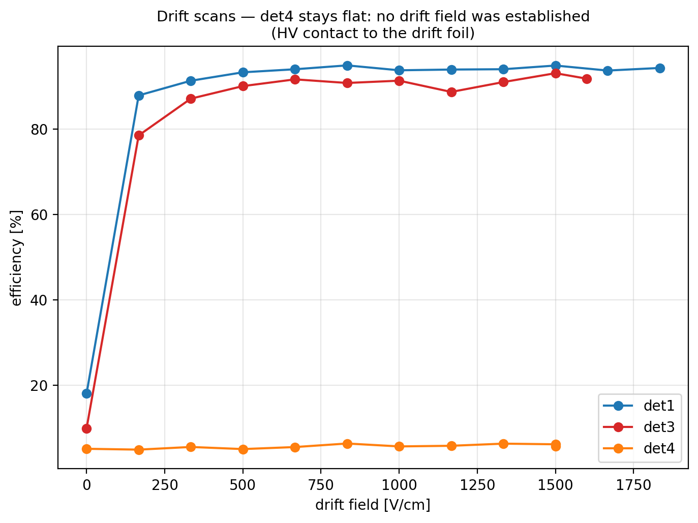
Drift scans — det4 stays flat because
no drift field was established in that run. Shown, and labelled as such.
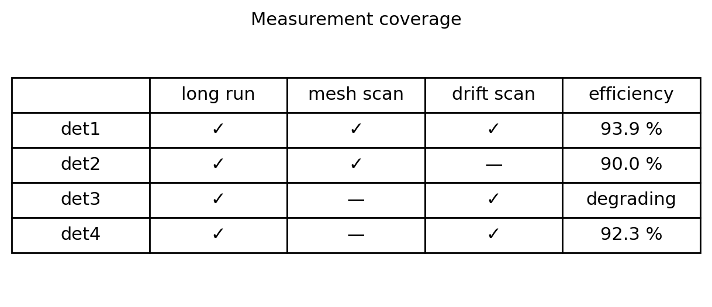
Why show the coverage table
Not every detector has every measurement — det2 never got a drift scan, det3
collapsed before it could be scanned properly, det4's early scan had no drift
field. Showing the coverage explicitly is what keeps the four-detector
comparison honest.
Convention applied throughout: timing points from too few
events are drawn hollow and never quoted as a resolution.
Say: "Four detectors is a small sample and the coverage
is uneven. I would rather show you the holes than let you assume there are
none."
39OPTIONAL
The same map, made two ways
NEW
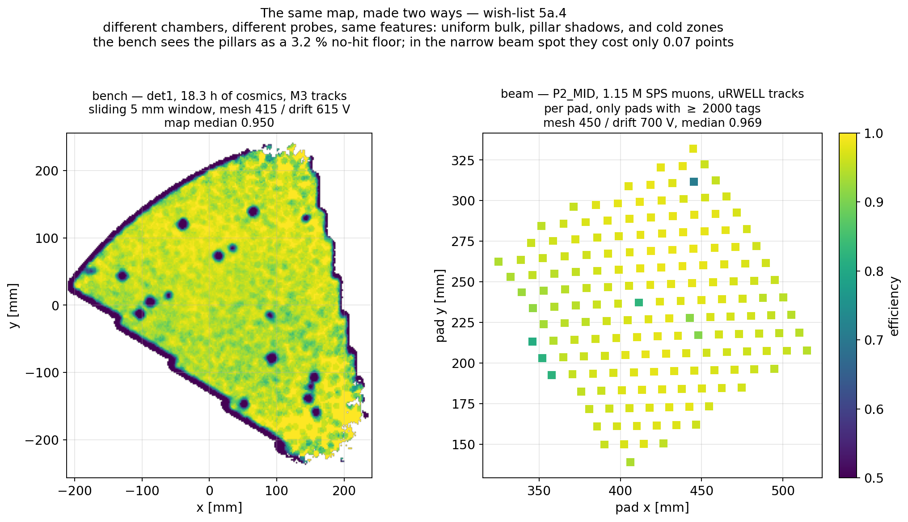
Bench and beam, one colour scale
Left: det1 on the cosmic bench — 18.3 h, M3 tracks, a sliding 5 mm
window over the true pad footprint. Map median 0.950.
Right: the same chamber as P2_MID in the beam — 1.15 M SPS muons,
uRWELL tracks, per pad. Median 0.969.
The bench sees the mesh support pillars as a 3.2 %
no-hit floor across the whole fan; in the narrow beam spot they cost only
0.07 points. Same detector, same features, two environments — the
independent cross-check the wish list asked for.
Say: "The pillars are visible on the bench because
cosmics illuminate the whole fan. The beam spot is 5 cm across and misses
them — which is why the beam number is higher, and why you need both."
40BACKUP
Backup
For questions — methodology, systematics, and the open items
BACKUP
Q: "How do you know your channel mapping is right?"
Four independent validations
Against the M3 telescope on the bench. The within-connector pad
ordering was determined from track–hit correlation, not from the connector
drawing (r = 0.93 / 0.88), and it came out reversed relative to the
naive reading — a real 2-pin gap in the connector.
P2 planes against each other on the beam found a flipped
c_5_top ribbon on P2_IN.
The uRWELL reference confirmed it independently.
The VMM readout confirmed it again, through completely different
electronics.
Three chains, same answer. And the freely fitted
uRWELL→pad transform returns a proper rotation (unit singular values,
det = +1) of −60° at every station and every scan point — a wrong map would not
do that.
Two sanity checks worth quoting
Deliberately mis-setting the map moves the efficiency from 96 % to
60 %. Hence the rule: if efficiency reads far below 90 %, suspect the
mapping before the detector.
The VMM finds the same dead pad as DREAM — pad 635 (VMM 17 ch 4) at
(411, 237) mm, matching the dark square at (410, 237) in the DREAM map. Two
electronics chains, same defect, same coordinates.
Where it is still open
P2_IN under VMM readout. Residual 4.7 mm against 3.4 mm elsewhere,
with a shoulder at 20–30 mm in the matching distance — a partly wrong
channel→pad map on the plane that already had mapping trouble. The uRWELL
tracks now make re-deriving that map possible, which is the fix.
41BACKUP
Q: "Is the reference telescope good enough?"
The uRWELL reference, characterised
Two EIC uRWELL strip planes, ~1 mm pitch, over a 1370 mm lever arm.
Front–back residual spread ≤0.66 mm, no rotation between them.
Beam divergence understood as a virtual source ~40 m upstream.
Rock-stable all campaign at 620/420 V. The fitted frame moves
<0.02° over 4.5 h and across all 23 scan points, with no shear
(<0.0013).
1.15 M tracks per station in a single sub-run.
Sub-millimetre pointing against a 12 mm pad: the reference
contributes nothing to the residual, which is why the measured 3.46 mm is pure
pad quantisation.
Systematics, and how they were bounded
Probe radius. Efficiency is flat from 8–10 mm out to 40 mm (e.g.
96.05 % at 8 mm → 96.66 % at 40 mm), with an accidental slope of only
7 × 10⁻⁴ per 10 mm. → ±0.3 %.
Denominator. Triggers the probe FEU never recorded are removed using
the DAQ's own record; HV-settle and spark windows are removed by time.
Fiducial. Tracks must land within 9 mm of an instrumented pad; the
efficiency is on the active-area plateau.
Reference features are visible and identified — a ~5×5 mm hole in
the uRWELL appears at the same place in all three stations' maps in the
uRWELL frame, which is how we know it belongs to the reference and not to
the detectors.
42BACKUP
Q: "What about the reference run that disagrees?" — data-quality register
Known and stated
The 27 Jul level shift.eff_nominal_1 reads 3–5 points
lower than 25 Jul in both methods, with the station order rearranged
(OUT 0.955, MID 0.91, IN 0.88). P2_IN there is det2 on its last morning, declining
before it was pulled at 15:00. The MID/OUT shift is open — candidates are
charging history, beam steering into a weaker pad region, and the drift
700 → 750 V change. The talk quotes the 25 Jul high-statistics run.
Two gas-A drift scans taken two days apart at identical setpoints
differ by ~27 ns in plateau latency: the drift looked ~30 % slower on 1 Aug.
Same direction as an earlier "slow bottle" suspicion on the bench.
Temperature/pressure/flow logs would settle it.
Holes in the dataset, stated not hidden
7 FEU files sit as intact *.fdf.hang from decoder
hangs; re-decoding needs the DREAM decoder binary and the DAQ machines are
off.
VMM gaps: run_59 recorded no data (its scan was retaken as run_61);
run_62 captured 2 of 6 drift points; gas-B VMM drift is therefore 2
points.
drift_mesh_2d_1 was killed by a P2_MID trip and is superseded
by _2.
drift_450 of the drift scan is zero drift field — never
fit as a normal point.
Chunked sub-runs. Any analysis globbing one file per sub-run
silently loses up to 57 % of the data. All numbers here sum chunks.
Gas labels were wrong in the DAQ configs for the whole campaign
(they all said Ar/Iso 95/5). 136 configs corrected on EOS; the changeover is
independently confirmed in the data.
Worth saying if pressed: the honest version of "96–97 %"
is "96.5 / 97.1 / 96.0 % at the working point on 25 July, settling to ≈96 /
95 % after an hour of beam." Everything above is why that is the sentence.
43BACKUP
Q: "Why is your bench timing so much worse than your beam timing?"
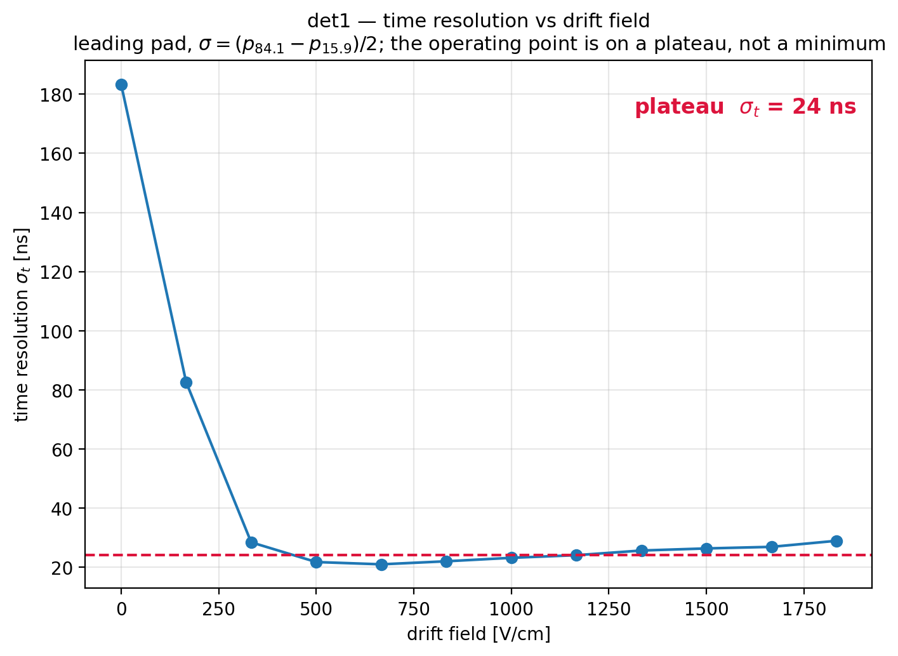
Because they are different measurements
Bench: cosmics arrive at all angles through a 3 mm gap, so
the drift path length varies event to event. That is a geometric spread, not a
detector limitation. Result: ~32 ns plateau, 28.8 ns best conditions.
Beam: muons arrive collimated and normal, so the geometric term
largely vanishes. Result: 15.5–22.4 ns per station.
Things ruled out on the bench, by measurement
The trigger — decoding the M3 telescope's own FEU gives correlation
0.03 and a ≲7 ns contribution.
Mesh planarity — the FEM prediction is a factor 57 too small
(r = +0.06). Not mechanical.
The gas table — cross-checked against an independent Magboltz run
for the same mixture, agreeing to 0.1–0.3 % at every shared field point.
One honest correction to make if it comes up. The
bench drift-scan CSV carries an apparent drift velocity 20–30 % above
Magboltz. That is not a measurement: it is the measured time spread
multiplied by an assumed geometry factor of 0.8, and the data require 0.63 ±
0.03 — stable across a field range over which the Magboltz velocity itself
changes by 7 %. Re-fitting it would make it agree by construction. The right
thing is to report the measured time spread against the Magboltz
prediction, with no free parameter.
44BACKUP
Q: "How do you know the inefficiency isn't the gas?"
Ruled out numerically
Ar/isobutane 95/5 gives ~31 primary clusters/cm, so a 5 mm drift gap sees
~15 clusters:
P(0 clusters) = e−15 ≈ 2 × 10⁻⁷
Three to four orders of magnitude too small to matter, and it survives any
plausible gap — even at 3 mm it is 0.02 %.
Everything else that was excluded
dead connectors
removed from numerator and denominator
dead pads
0 with local ε < 15 % after removing connector 2
hot / oscillating pads
8 masked automatically; before masking,
6 pads carried 69 % of hits
sparks
2.5 % dead time vetoed; products kept both ways
match radius R
on plateau; tracks ideal Gaussian
containment for σ = 4.7 mm
active-area radius
on plateau, anchored to the 11.8 mm pad
pitch (half-diagonal 8.4 mm)
M3 projection quality
only ~24 % worse at the near plane —
cannot explain a 94 → 54 % difference
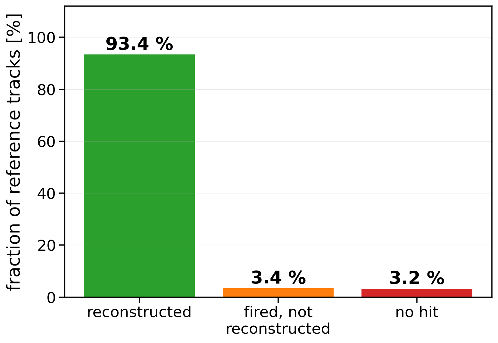
And on the beam the same question has a cleaner answer:
83 % of all misses have no cluster anywhere in the event. That is a
gain/threshold floor, and the VMM analysis then showed exactly what a threshold
floor looks like when you can move the threshold.
45BACKUP
Q: "Did you pick the right drift field for timing?"
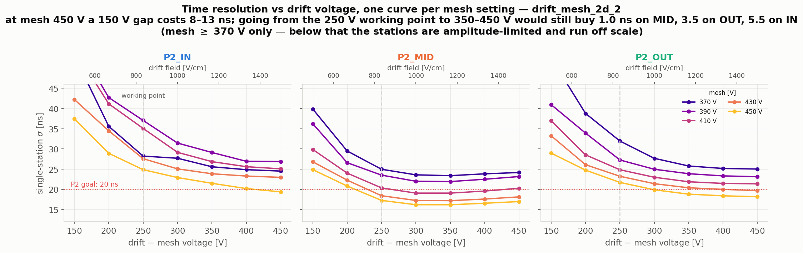
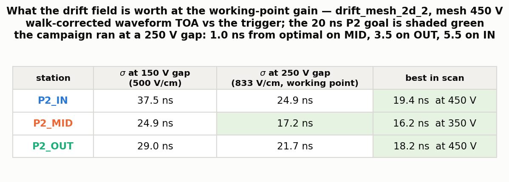
Answer: nearly
A 150 V gap is the only genuinely bad choice — it costs 8–13 ns.
We ran at a 250 V gap (833 V/cm).
The scan's best point would have bought 1.0 ns on MID, 3.5 on OUT
and 5.5 on IN.
Only P2_MID has a true minimum inside the scanned range, at a
350 V gap; IN and OUT are still improving at the top of it. So the drift
electrode, not the mesh, is where the next nanoseconds are — and the new gas
attacks the same term.
Say: "We were within a nanosecond of optimal on the best
station, and the scan tells us exactly what a bigger drift gap would buy."
46BACKUP
Q: "Two bugs you found in your own analysis?"
Worth volunteering — it is the reason the VMM numbers changed
between August drafts
1. The hot-channel mask was deleting the beam
The rule flagged any channel above 8× its own chip's median
occupancy. On a chip whose threshold has been raised, the noise disappears, the
median collapses, and the illuminated pads stand 30–50× above it — so
they were masked.
On P2_MID this removed 64 630 hits arriving exactly at the +115 ns
trigger latency. The pads it killed measure 61 % with the mask off
and 1 % with it on. VMM 9 was not dead; it was masked.
Flagging on out-of-time occupancy does not fix it either: the beam delivers
particles at tens of kHz while the matched trigger runs at ~1.4 kHz, so most of
a beam pad's hits are out of time with a matched trigger.
New rule: an absolute rate. A 12×12 mm pad in this beam takes a few
kHz; the pathological channels sit at 10⁵ Hz. Two decades of clear air between
them.
station
ratio rule
absolute rate
P2_IN
0.154
0.155
P2_MID
0.592
0.669
P2_OUT
0.854
0.854
P2_OUT — the headline station — is untouched, so the headline
number stands.
2. Capture spans started at t = 0
A few hits per capture carry srs_timestamp = 0. Taking each
capture's span as (min, max) of its hit times stretched every capture back to
zero. Unioned, that made the "was the VMM recording?" cut accept everything and
made the live time come out 25× too long. Both now use quantiles.
Why volunteer this. It is a good answer to "how
much should I trust these numbers": the failure mode of a masking rule is that
it deletes signal, and the way it was caught was that the deleted hits sat
exactly at the known trigger latency. That is the kind of cross-check
the uRWELL reference makes possible.
Also worth knowing
The SRS tick is 22.5 ns, not 25 — which is why VMM σ is pinned
there.
The trigger fan-out to the VMM only exists from 30 July (run_31), so
earlier VMM runs have no matched trigger.
DREAM and VMM DAQs number runs independently and drift apart after run_58 —
VMM data must be labelled from its own config, never from the DREAM one.
47BACKUP
Reference: the gas study behind the mixture choice
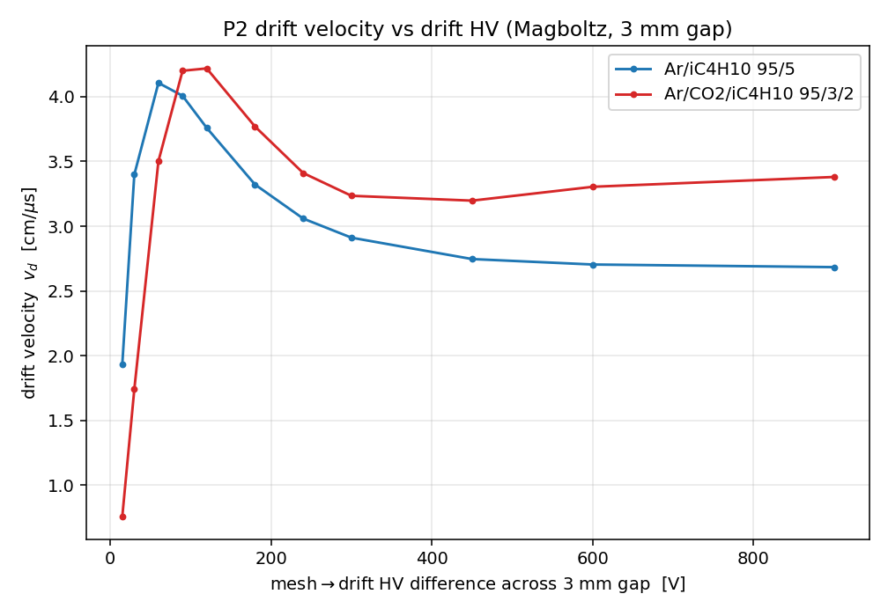
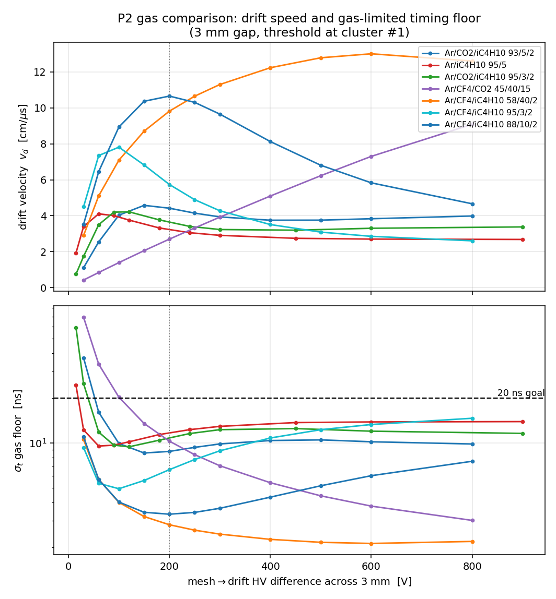
mixture
ncl /cm
vd
[cm/µs]
tdrift [ns]
σgas [ns]
mesh for equal gain
Ar/CO₂/iC₄H₁₀ 93/5/2 (baseline)
26.7
4.42
67.9
8.8
410 V
Ar/iC₄H₁₀ 95/5 (bench gas)
27.9
3.23
92.8
11.7
390 V
Ar/CF₄/iC₄H₁₀ 88/10/2 (chosen)
28.8
10.65
28.2
3.3
426 V
(+16)
Ar/CF₄/iC₄H₁₀ 58/40/2
36.6
9.81
30.6
2.8
535 V (+125)
Ar/CF₄/CO₂ 45/40/15
37.0
2.70
111
10.3
589 V (+179)
Magboltz, 150 µm amplification gap, 3 mm drift gap, drift
ΔV = 200 V. The 88/10/2 mixture wins because it buys 2.4× the drift
velocity and the flattest vd plateau for only +16 V of mesh. The
40 % CF₄ mixtures are marginally faster but cost 125–179 V, which pushes the
chamber well past where it sparks.
48BACKUP
Reference: the det3 autopsy in one figure
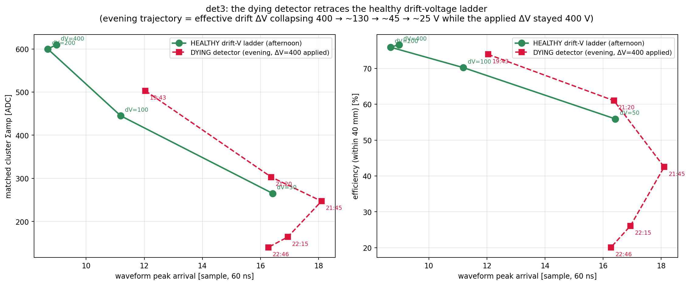
The argument
det3 died over ~12 hours at fixed, clean HV with zero sparks
(76.6 → 68.7 → 42.9 → 0.5 % over 10 h). Two hypotheses: gas, or a drift-foil HV
problem.
The test that separated them
As it died, det3 retraced the healthy detector's drift-voltage ladder
— in peak time, amplitude and efficiency simultaneously. The effective
drift voltage walks 400 → 130 → 45 → 0 V.
Magboltz kills the gas hypothesis: every plausible contaminant makes
the drift faster. This got slower.
The failure front moves patchwise from the inlet corner — consistent
with metallisation progressively decoupling from the HV contact.
Verdict: drift-foil HV decoupling. Distinct from
det1, whose signature is intermittency, early arrival times in the dead phases,
simultaneous death and revival across the plane, and mesh-current spikes at the
moment of death — mesh-contact arcing.
Two different diseases, separated by measurement, both diagnosed
before either detector reached a beam. Proposed next step: an induced-pulse lab
test.
49DECK NOTES
What is new here, and what is still open
New for this deck (not in any earlier report)
bench ↔ beam ε(mesh) overlay (slide 19) — roadmap WP-C, both halves
existed but had never been put on one axis.
DREAM vs VMM on one axis (slide 21) — roadmap WP-B, which the
roadmap and task plan both list as blocked. It is no longer blocked: the
VMM efficiency has been re-derived against the same uRWELL tracks over 78
sub-runs, so the two are directly comparable. This supersedes the
"never put these on one axis" caveat slide in the August options deck.
the threshold evidence panel (slide 22) — the Landau-survival model,
the threshold-DAC-only pairs and the per-pad pulse-height correlation, drawn
from the run_46 autopsy.
the cross-campaign timing ladder (slide 20) — roadmap WP-G.
the Nov-2025 SNR grid (slide 7) — roadmap WP-E, redrawn as a grid
with the untaken cells marked rather than as lines through a sparse scan.
the manufacturing slide (slide 5) — the baking-buckling study had
never been put in a talk.
the P2 telescope tracking on its own — 508 five-detector
coincidences with a P2-only line fitted through the three cluster centroids and
compared with the uRWELL reference. It localises to 3.3 mm = 12/√12 at
the middle plane and cannot measure angle (one pad over the 620 mm lever
arm is 19 mrad against a 1.2 mrad beam). New machinery:
tools/extract_track_pairs.py, and make_coincidence.py
--pairs, which draws both tracks in one scene.
rate performance — efficiency binned inside sub-runs against
instantaneous track rate: no dependence, +0.6 ± 0.4 points/kHz.
the transport half of the bench↔beam comparison — and the chamber
identity that makes it a same-chamber comparison: P2_MID is det1 and
P2_OUT is det3, from the hardware logbook.
the 3D five-chamber coincidence (slides 17–18) — rendered from the
nTof_x17/mpgd26 setup model with a real measured uRWELL muon
threaded through it — 476 five-fold coincidences extracted from
highstat_eff_1 on lxplus, of which the deck draws the cleanest.
New machinery: make_coincidence.py,
tools/extract_coincident_event.py (which refuses to write unless it
reproduces the published uRWELL front→back alignment) and
tools/check_track_pad_frames.py, which exists because
composing the published uRWELL→pad alignment with the renderer's beam's-eye pad
mirror is a reflection — x agrees to 0.1 mm and y silently flips. The
track is therefore drawn through the same pad-frame→lab composition as the
pads; the check script prints the residual (0.4–1.3 mm, the station-to-station
spread of the fit itself).
Still open, and worth a decision
Clearance for the July material. No refereed BASKET paper exists;
specs come from internal notes. Ask the collaboration now.
Two ⚠ citations: the canonical VMM3a reference, and anything
BASKET-specific beyond the design report.
Which efficiency form of words. The deck uses "96.5 / 97.1 / 96.0 %
at the working point, settling to ≈96 / 95 %". Confirm.
The 27 Jul level shift is unexplained (slide 35). It is in backup;
decide whether to volunteer it.
P2_IN under VMM is a lower bound pending a re-derived channel map.
The tracks now make that possible — worth doing before the talk if there is
time, since it would remove the one asterisk on slide 21.
Bench timing number. The deck quotes 32 ns plateau / 28.8 ns best
conditions from the dedicated waveform study. Note that the roadmap's
"46 ns" and stage 19's "20.8 ns per-pad median" are different estimators of
different things — do not mix them in one sentence.
Cut first if the dry run overruns: slide 8 (Act 1
remainder), slide 18 (the alternative event views), slide 35 (bench coverage
detail), slide 30 (2D surfaces), slide 33 (chamber swap).
Protect: 15–23 — that block is the talk.